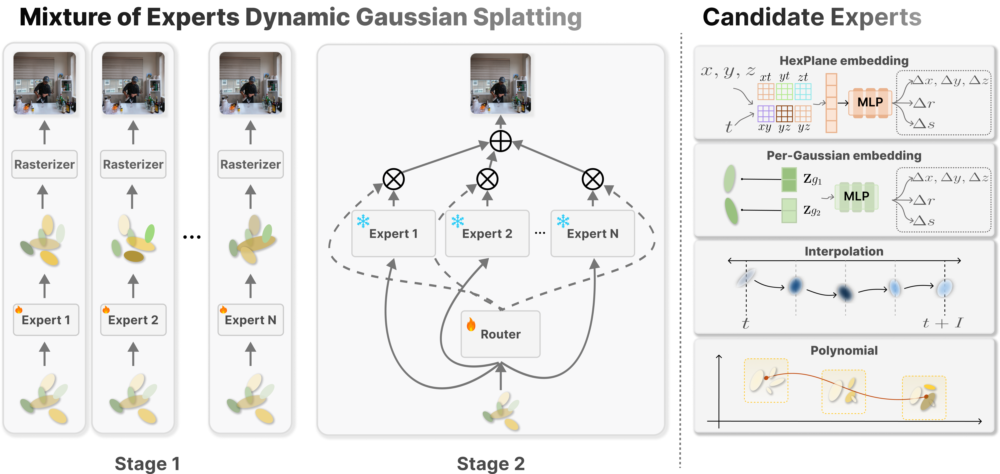
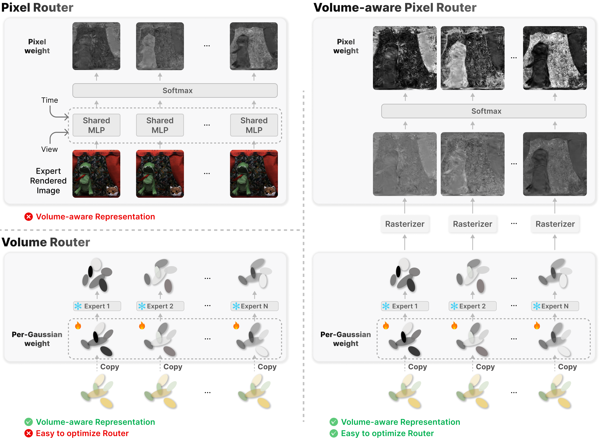

Summary: Unified Mixture-of-Experts framework for dynamic Gaussian Splatting with a volume-aware pixel router for adaptive expert blending.
Recent advances in dynamic scene reconstruction have significantly benefited from 3D Gaussian Splatting, yet existing methods show inconsistent performance across diverse scenes, indicating no single approach effectively handles all dynamic challenges. To overcome these limitations, we propose Mixture of Experts for Dynamic Gaussian Splatting (MoE-GS), a unified framework integrating multiple specialized experts via a novel Volume-aware Pixel Router. Unlike sparsity-oriented MoE architectures in large language models, MoE-GS is designed to improve dynamic novel view synthesis quality by combining heterogeneous deformation priors, rather than to reduce training or inference-time FLOPs. Our router adaptively blends expert outputs by projecting volumetric Gaussian-level weights into pixel space through differentiable weight splatting, ensuring spatially and temporally coherent results. Although MoE-GS improves rendering quality, the increased model capacity and reduced FPS are inherent to the MoE architecture. To mitigate this, we explore two complementary directions: (1) single-pass multi-expert rendering and gate-aware Gaussian pruning, which improve efficiency within the MoE framework, and (2) a distillation strategy that transfers MoE performance to individual experts, enabling lightweight deployment without architectural changes. To the best of our knowledge, MoE-GS is the first approach incorporating Mixture-of-Experts techniques into dynamic Gaussian splatting. Extensive experiments on the N3V and Technicolor datasets demonstrate that MoE-GS consistently outperforms state-of-the-art methods with improved efficiency.
MoE-GS follows a classic Mixture-of-Experts design to address dynamic scene reconstruction. In Stage 1 (Expert Training), each expert is independently trained to reconstruct dynamic scenes by learning its own Gaussian representation. In Stage 2 (Router Training), expert parameters are frozen, and the Volume-aware Pixel Router is optimized to compute adaptive spatial and temporal gating weights for blending expert outputs. The right shows candidate expert types—including HexPlane embedding-based, Per-Gaussian embedding-based, reformulation-based, interpolation-based, and polynomial-based models—each capturing different dynamic behaviors.

We introduce the Volume-aware Pixel Router, which overcomes the limitations of naive pixel-level (top-left) and unstable 3D-level routing (bottom-left) by combining learnable per-Gaussian weights, volumetric attributes, and rasterization-based weight splatting. This enables temporally and view-consistent, volumetrically informed, and stably optimized expert blending.

We visualize the router-derived per-Gaussian responsibilities in 3D to reveal how MoE-GS allocates different deformation priors across space. These responsibilities reflect the geometry-aware routing field learned by the model, showing which experts dominate each region. By reweighting Gaussian opacities using these responsibilities, we construct a post-hoc fused Gaussian model that exhibits coherent 3D occupancy and improved structural consistency, explaining why the spiral-view renders appear cleaner and more stable.
To evaluate how MoE-GS improves 3D geometric consistency, we visualize spiral trajectories from all experts by rendering both their RGB outputs and their corresponding depth maps. These expert-level spiral and depth renderings reveal distinct geometric behaviors—such as inconsistent density, ghosting, or unstable surfaces—originating from each deformation prior. By comparing them with the spiral-view rendering of the post-hoc fused Gaussian model constructed using router-derived per-Gaussian responsibilities, we observe that MoE-GS produces cleaner and more coherent 3D occupancy with significantly more stable geometry across viewpoints. This experiment directly demonstrates that MoE-GS goes beyond 2D blending and achieves a genuinely geometry-aware mixture of heterogeneous deformation priors.
The following video provides a qualitative comparison between our MoE-GS framework and various baseline methods. It also includes visualizations of the routing weights used to generate the final MoE output, offering insight into how MoE-GS adaptively blends expert predictions to reconstruct dynamic scenes.
To evaluate the robustness of MoE-GS under diverse real-world deformations, we conduct experiments on two multi-view dynamic scene datasets commonly used for dynamic scene reconstruction: Neural 3D Video Synthesis (N3V) and the Technicolor dataset. The following visual comparisons demonstrate that MoE-GS consistently outperforms existing methods by achieving higher visual fidelity in dynamic scene reconstruction. In particular, the zoomed-in video results show that MoE-GS effectively leverages the strengths of the full expert set by adaptively selecting the best-performing regions, resulting in superior reconstruction quality.
To mitigate the high storage and inference costs of MoE-GS, we validate the effectiveness of our proposed distillation strategy designed to address these issues. Specifically, we compare expert retraining with ground-truth supervision against our distillation approach, which combines MoE images as pseudo ground truth with actual ground-truth supervision. The following videos compare the retraining results and distilled outputs for each algorithm, demonstrating that our distillation strategy allows the expert models to approximate the performance of MoE-GS to a significant extent.
Birthday
Birthday
Fabien
Fabien
Birthday
Birthday
Fabien
Fabien